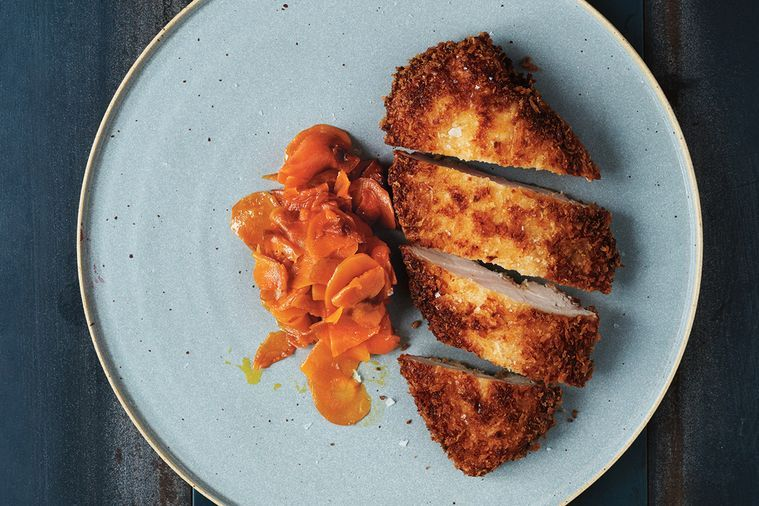

←
Tonkatsu chicken with caramelized carrots

Description
Use smooth rather than chunky chilli paste to really infuse the meat with flavour. This is an edited extract from Downtime by Nadine Levy Redzepi, Ebury Press, $55, out today.
Ingredients
- 70g plain flour
- 2 large eggs
- 2 tbs Asian chilli paste, such as sambal olek
- 65g panko breadcrumbs
- 4 x200g skinless chicken breasts
- 75ml grapeseed or vegetable oil
- 30g salted butter
- 2 lemons, halved to serve
- 90g caramelized butter
- 450g carrots, thinly sliced in rounds
Steps
- For the caramelised carrot, melt 30g butter in a medium saucepan over medium-low heat. Add the carrot and 1 tbs water. Slice remaining 60g butter, scatter over carrot and cover.
- Simmer 10 minutes or until butter has melted, water has cooked away and carrot on bottom is golden brown. Stir to move top layer of carrot to the bottom, cover and cook 5 minutes or until brown.
- Stir and cook another 5 minutes or until most of the carrot is caramelised and tender. If it is scorching, add a little water.
- Preheat oven to 100°C. Place flour in a wide, shallow bowl. Beat the eggs and chilli paste in another shallow bowl. In a third shallow bowl, add panko crumbs. Pat the chicken dry with paper towel. Coat each chicken breast in flour, then in egg, then in panko crumbs. Place on a plate.
- Place a wire rack on a baking sheet. In a large frypan, heat the oil and butter over medium heat until foam subsides. Add the chicken and cook 3-4 minutes until golden on the bottom. (You may need to do this in two batches.) Turn and cook a further 3-4 minutes until browned and cooked through. Use a slotted spatula to transfer to the wire rack and keep warm in the oven while frying remaining chicken.
- Transfer the carrot to a serving bowl and season with salt to taste. Serve the chicken with the lemon halves and carrot.